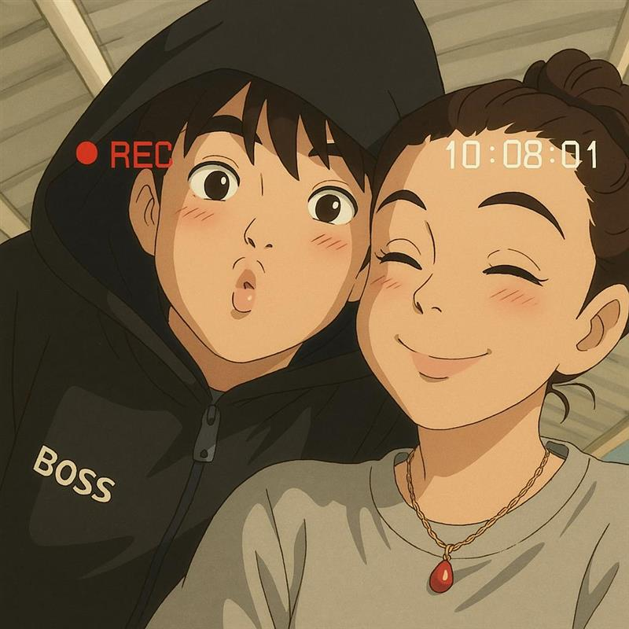

Olá! Prazer eu me chamo Pedro Victor e sou um estudante da ETEC de Peruíbe, agora estou no terceiro ano do curso integrado ao ensino médio, tenho um estilo variado mas gosto especificamente de música - em variados estilos.
Em meio a este curso pude descobrir várias áreas da Tecnologia e também muitas pessoas, posso dizer que este é um ambiente educacional desafiador, mas que valeu muito apena chegar até aqui, muitos desistiram pelo caminho, mas também muitos ficaram, mesmo tendo um professor que puxa MUITO mais do que os outros, sou MUITO grato a ele por ter paciência e querer continuar tentando, hoje posso dizer que sou uma pessoa completamente diferente.
Para esta atividade foi requisitado um site de tema livre que tivesse algo haver comigo, então fiz este site de apresentação onde ele ficará on-line em um servidor com domínio da InfinityFree - um site gratuito para isso - , e também foi requisitado um chat bot, que estará logo abaixo